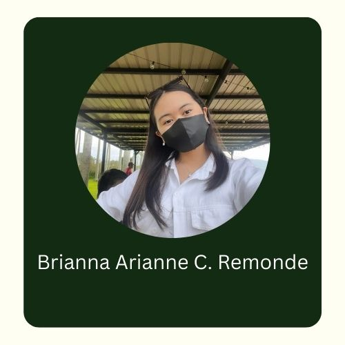
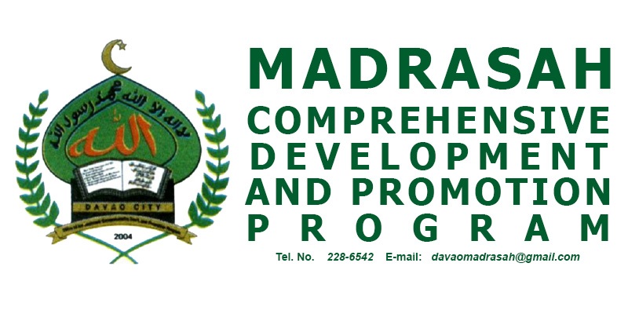
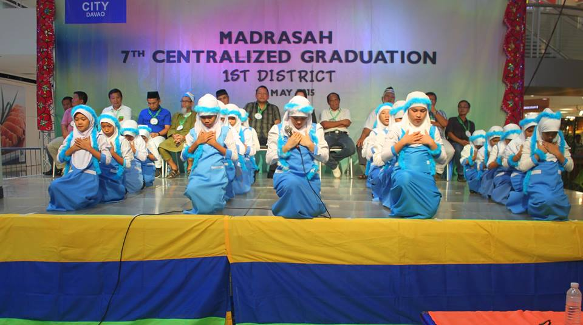

"Be Aware. Be Clean"
MADRASAH INSTITUTION


"Be Aware. Be Clean"
MADRASAH INSTITUTION
Contact Us
9 Kostka - Group 1A

What is Madrasah?

The Madrasah institution was made since it seeks to provide necessary framework and judgment to
enable each Muslim student to make the informed choice consistent to Islamic spiritual and moral norms.
Having said that, an order was recognized (CREATING A MADRASAH DEVELOPMENT COMMITTEE)
for the development of Muslim Filipinos.
The City Government of Davao funded the implementing of the Madrasah System of education
in order to have a unification and coordination of all the programs. They plan this so that they
are able to foster and sustain each local Madrasah system so that it not only enhances
development in Davao, but to the whole country as well.

Mission of Madrasah
By equipping the graduate with the core knowledge and analytical tools, the intended outcomes are:
- To create a sense of identity with their beliefs and values to meet today's social challenges.
- To give the frame of mind and controlled judgement to authorize them to do the considered and
enlightened choice consistent with the spiritual and moral norms of Islam culture.
- To make the considered and informed choice consistent with the spiritual and moral norms of Islam.
Madrasah's Organizer
The Philippines, Creative Associates, with funding from USAID, implemented an activity to support madaris in the Autonomous Region in Muslim Mindanao (ARMM). Their goal is to address educational imbalance in the ARMM Mindanao improving policies. They aim to raise awareness among the community including its religious leaders. Their goal is to improve Madrasah education.
Madrasah's Benefactors
MCDPP was created through President Gloria Macapagal-Arroyo and issued Executive Order No. 283 or An Order Creating a Madrasah Development Committee in 2004. The office was created as the center of basic government services in Muslim communities all-over Davao City. Muslim Filipinos, as well as recognizing each local Madrasah system as a mechanism that can provide educational opportunities that will contribute to the government’s efforts.
Madrasah's Beneficiaries
The official beneficiaries of Madrasah are Muslim youth. Madrasah Program beneficiaries are Muslim children who are willing to learn proper Islam principles. Many of the muslim children that are part of the Madrasah program are also bakwits. According to Baraguir, “In Salmonan alone we have around 400 students including the many bakwits (internally displaced persons) and also in San Rafael, there are also bakwits there”.